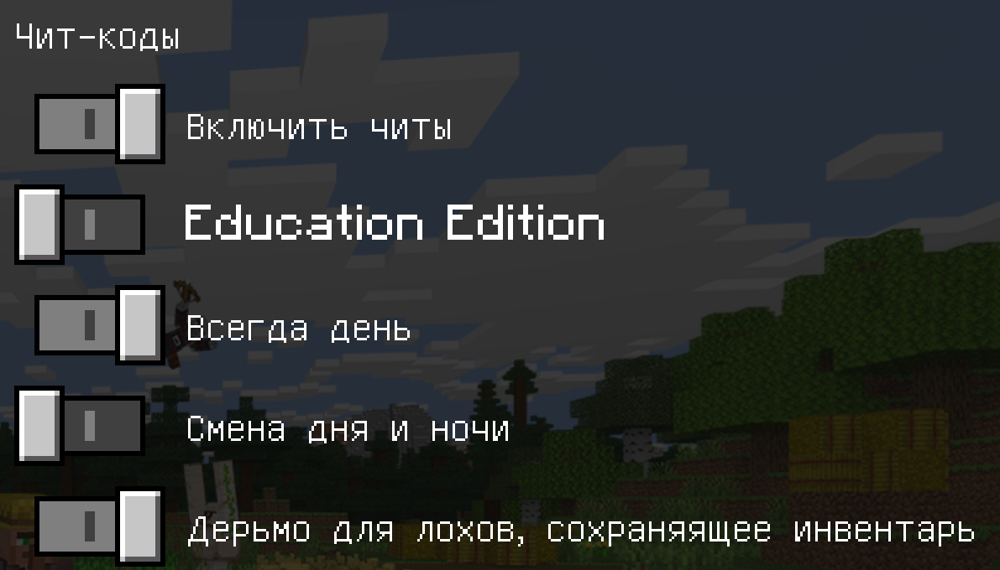
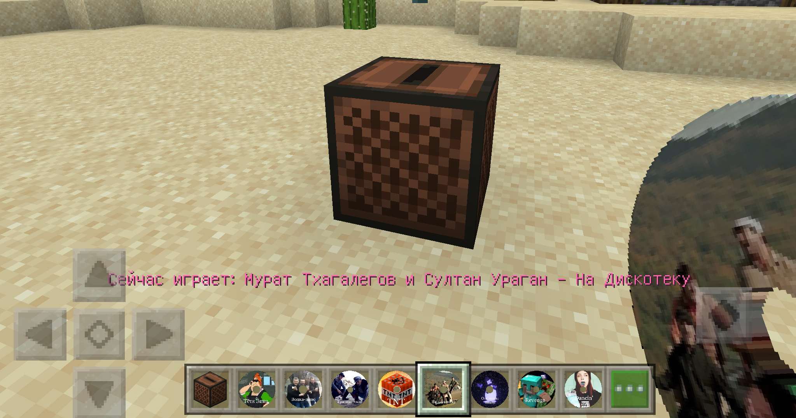
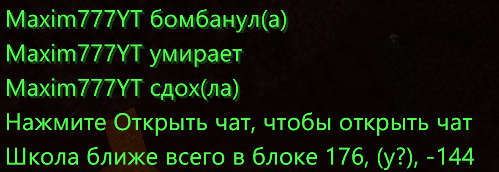
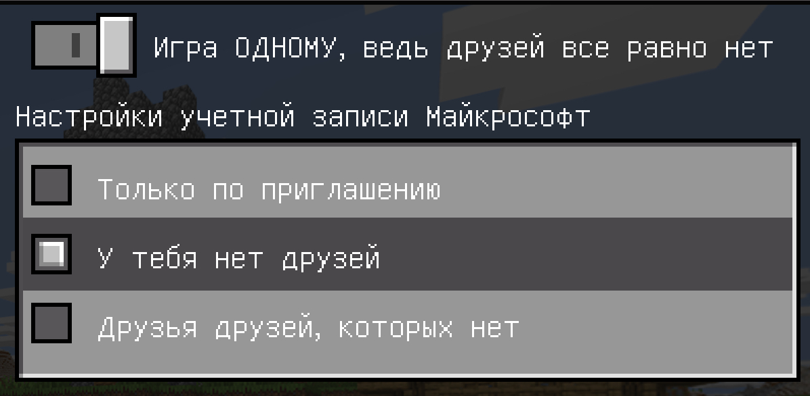
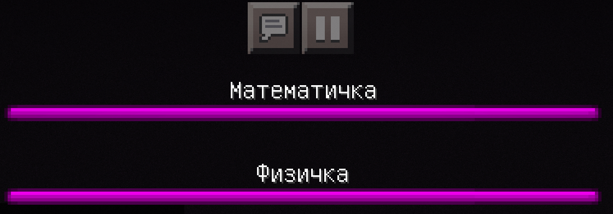

MCTrolls это набор ресурсов и для русскоговорящих, и для англоговорящих людей. Он добавляет два новых языка в Майнкрафт: "Русский(Германия)" и "SOmebOdy Once tOld me the wOrld is gOnna rOll me". Эти языки шуточные и изменяют некоторый текст в майнкрафте с обычного на смешной. Также он изменяет пластинки на диски с другими песнями. Внизу вы можете увидеть несколько примеров:





Это перевод с языком "Русский(Германия)", второй добавленный язык также многое изменяет.
Вылетает майнкрафт, когда берёте пластинку в руки? Вот решение! "No crashes for MCTrolls" это текстур пак, который заменяет текстуру всех пластинок на текстуру с разрешением 32x вместо текстуры 128x в MCTrolls. Установив его, вы можете избежать краша Майнкрафта.